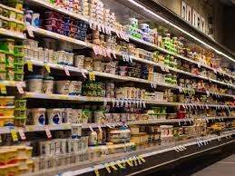

Online Shopping
- fashion
- electronics
- grocery
- personal care
Grocery :

Online Grocery :
An online grocer is either a brick-and-mortar supermarket or grocery store that allows online ordering, or a standalone e-commerce service that includes grocery items.[1][2] There is usually a delivery charge for this service. Brick-and-mortar supermarkets that have built internet channels to better service their clients are known as online grocers.[3] Online grocery delivery services are available throughout Europe, Asia and North America, mostly in urban centers. The online ordering is done through e-commerce websites or mobile apps.
In-store pickup :
In-store order pickup fridges at a Save-On-Foods store in British Columbia, Canada
For brick-and-mortar stores that have online ordering, customers can place orders online and pick up their ready orders in the store on their way home. In-store pickup—sometimes termed "click & collect"—is typically offered for same-day shopping. It is usually less expensive than delivery, and can be done at a time of the customer's choosing. This option is popular in rural areas. It is also useful for customers living outside of the store's local delivery area.
Local delivery :
Most local online grocers have their own drivers. The most common type of personal delivery involves storing grocery inventory in a warehouse to deliver to customers once orders are placed. Another type of personal delivery which is less common is based on just-in-time business in which there is no warehouse or inventory. In this type of delivery, customers place orders for next-day delivery. The online grocer shops for the groceries on the morning of the d elivery day.